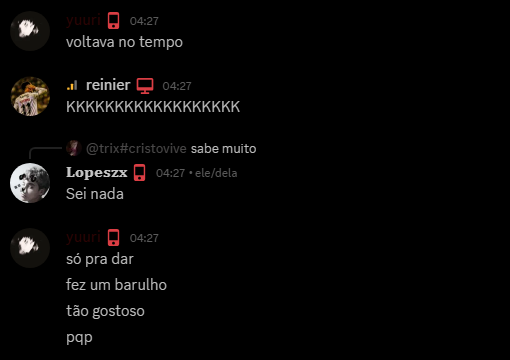
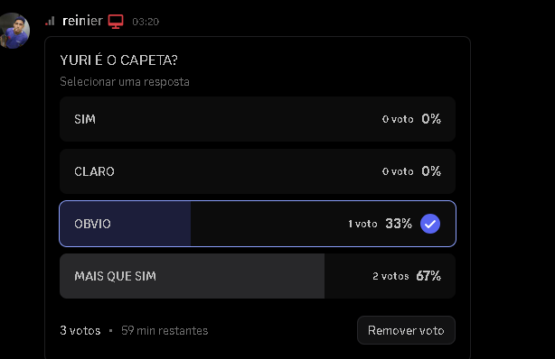
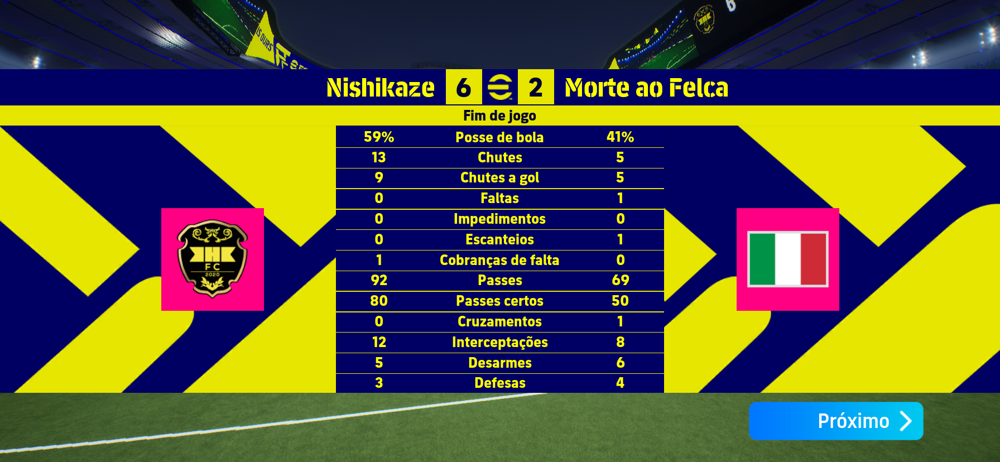
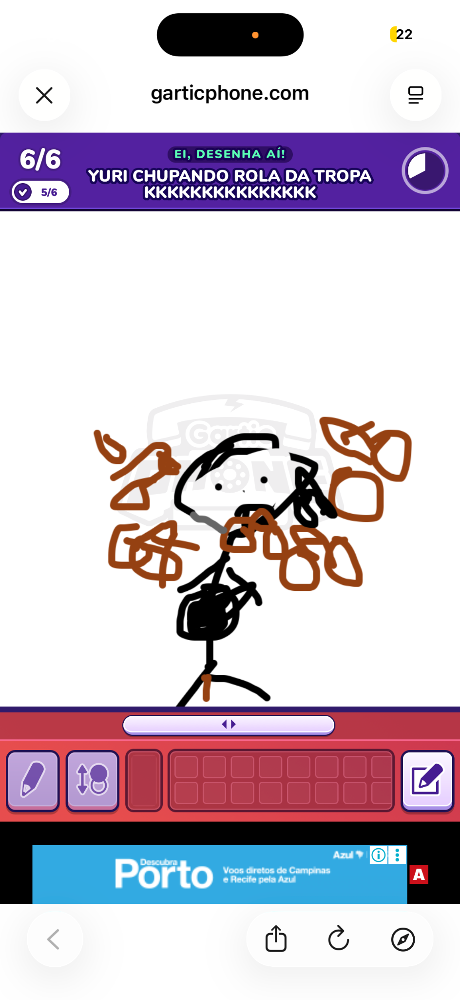

⚠️ Paródia. Este site foi criado apenas como uma brincadeira entre amigos.
Yuri
Origem: Call do Discord • Espécie: Homo Discordensis • Atualizado recentemente
Yuri é conhecido por falar frases extremamente aleatórias durante chamadas no Discord. Pesquisadores tentam entender suas mensagens há anos.
Frases históricas
- "eu já puxei todos cabelos da minhas amigas"
- "mt bom"
- "sei nada"
- "só pra dar fez um barulho tão gostoso"
Arquivo de Evidências



